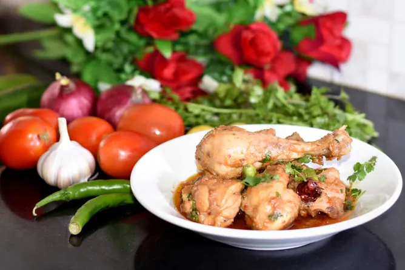

Highway Koyla Chicken Karahi

Ingredients
- Chicken 1 kg
- Tomatoes ½ kg (chopped)
- Ginger, garlic 2 tbsp (finely chopped)
- Green chilies 8-10
- Turmeric powder ½ tsp
- Fresh crushed black pepper 1 tsp
- Special karahi masala 2 tbsp
- Garam masala powder 1 tsp
- Ghee/oil ½ cup
- Lemon juice 1 tbsp
- Julian ginger
Special Karahi Masala
- Cumin seeds 1 tbsp
- Coriander seeds 1 tbsp
- Crushed red chili 1 tbsp
- Qasoor methi 1 tsp
- Khatai powder 1 tsp
- Chaat masala 1 tbsp
- Ajween ¼ tsp
Instructions
- Heat ghee/oil in a pan and fry chicken on high heat until changes color.
- Remove chicken from ghee/oil and keep aside.
- In the same ghee add finely chopped ginger and garlic; fry them. When it gives aroma add chopped tomato.
- Fry at high flame for 10 minutes, now add turmeric powder, fried chicken, salt, and ¼ cup water.
- Cover and cook at medium flame. After 15 minutes, increase the flame to high and fry chicken.
- Now add crushed black pepper, karahi masala, garam masala powder and cook nicely until ghee separates.
- Add lemon juice, green chilies, and Julian ginger.
- Give it coal smoke for 5 minutes. Dish out and serve with roti/naan and raita.
Special Karahi Masala
- Dry roast cumin seeds, coriander seeds, crushed red chili, and qasoori methi.
- Grind all dry roast spices with remaining spices.